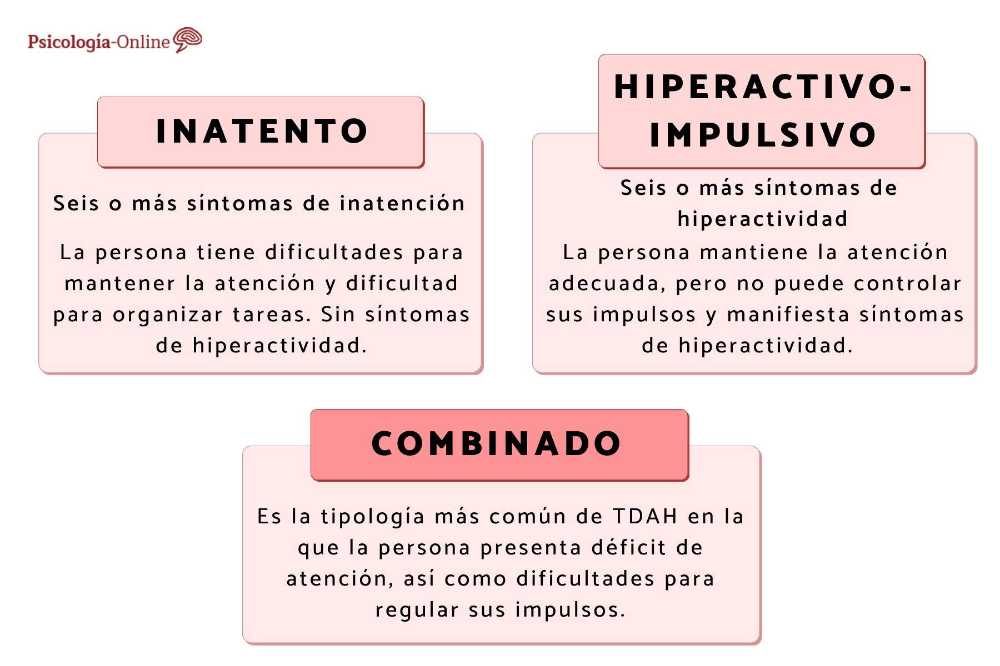

Descubre que es el THD (trastorno por Déficit de Atención e Hiperactividad)

El Trastorno por Déficit de Atención e Hiperactividad (TDAH) es un trastorno neuropsiquiátrico que afecta a niños y, a veces,
persiste en la edad adulta. Se caracteriza por problemas persistentes de atención, hiperactividad e impulsividad que pueden afectar
significativamente la vida diaria y el rendimiento en diversas áreas, como la escuela, el trabajo y las relaciones interpersonales.
mediante la programación de algoritmos en sistemas informáticos.
Dificultades de Atención:
Hiperactividad: Hiperactividad:
Para más información, contáctanos en: info@ejemplo.com